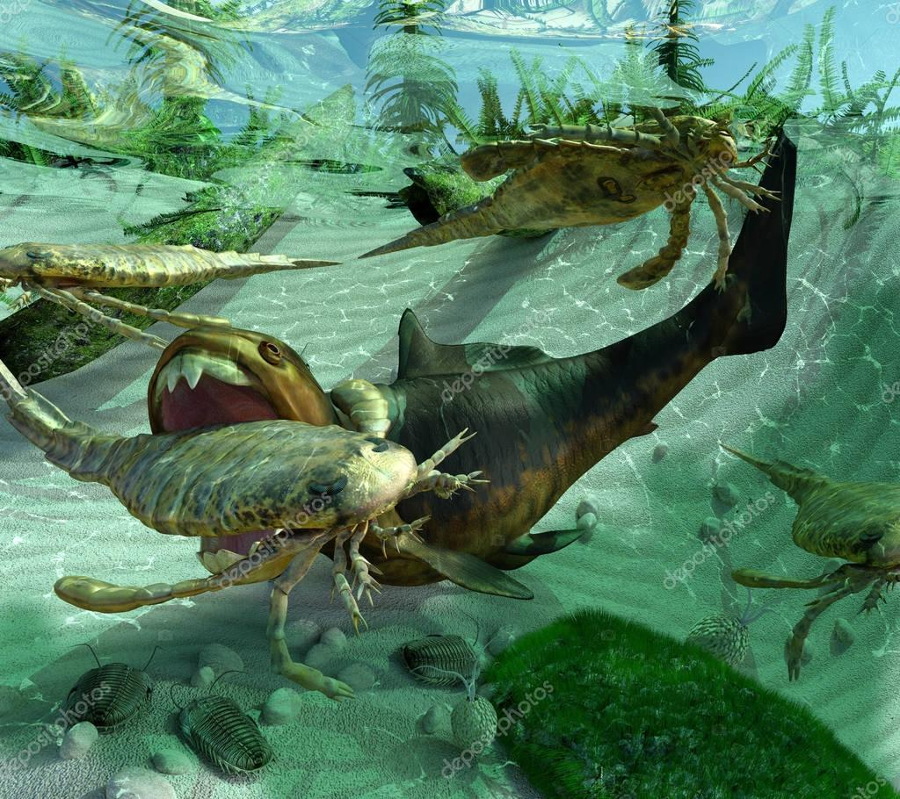

El Devónico es el cuarto sistema y período del Paleozoico en la escala temporal geológica. Sucede al Silúrico y antecede al Carbonífero. Duró unos 61 millones de años, comenzando hace unos 420 millones de años y terminando hace unos 359 millones de años. Debe su nombre a Devon, un condado ubicado en la península de Cornualles, en el suroeste de Inglaterra, lugar donde el geólogo escocés Roderick Murchison y su colega inglés Adam Sedgwick, identificaron este sistema en 1839.
En lo que respecta a la paleogeografía, las tierras emergidas terminaron repartidas entre un supercontinente en el sur, Gondwana, y otro en el norte, a la altura del ecuador, llamado Laurusia, que empezó el período como dos cratones en colisión, Laurentia y Báltica, separados inicialmente por el océano Jápeto. A la larga ambos convergieron para, más tarde, formar el supercontinente único llamado Pangea.
En los océanos, los tiburones primitivos se hacen más numerosos que durante el Silúrico, y aparecen los primeros peces de aletas lobuladas y los peces óseos. Los grandes arrecifes de coral, los trilobites y los braquiópodos siguen siendo comunes, y aparecen los primeros moluscos ammonites. Sobre tierra firme, las primeras plantas con semilla se extienden formando enormes bosques. Durante el Devónico, hace unos 365 millones de años, surgen los primeros anfibios. También proliferan varias líneas de artrópodos terrestres. Al final del período se produjo la extinción masiva del Devónico, que afectó gravemente a la vida marina. Durante el Devónico se formaron los yacimientos de petróleo y de gas de algunas zonas.
Aparecen las primeras lycopodiáceas, colas de caballo y helechos, así como las primeras plantas con semilla (progimnospermas), primeros árboles (la progimnosperma Archaeopteris), y primeros insectos (sin alas). Braquiópodos estrofoménidos y atrypidos, corales rugosos y tabulados, y crinoides son muy abundantes en los océanos. Ammonoideos goniatíticos alcanzan su máximo, surgen los coleoideos con forma de calamar. Declinan los trilobites y los agnatos acorazados, comienza el reinado de los peces mandibulados (placodermos, de
aletas lobuladas y osteíctios, primeros tiburones). Los primeros anfibios son aún acuáticos. Se forma Euramérica (continente de las Areniscas Rojas Antiguas).